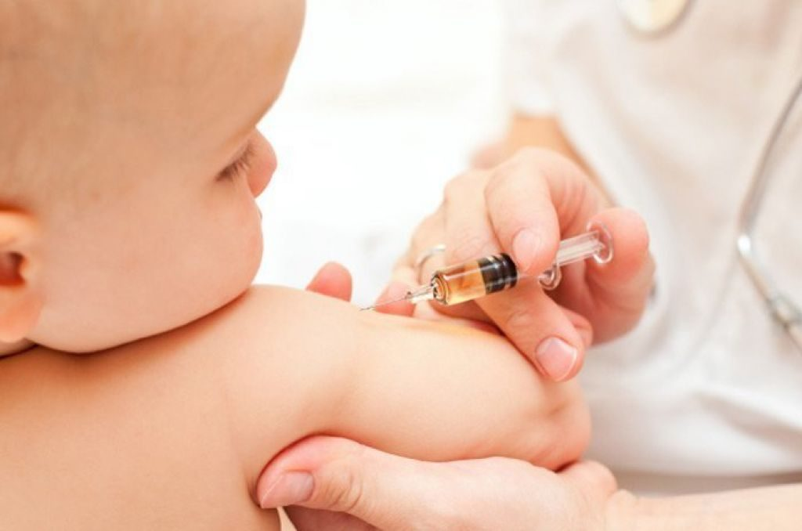

Jenis Imunisasi Wajib untuk Bayi 1 Bulan
Berikut daftar imunisasi wajib untuk Bayi 1 Bulan:
1. Polio
Imunisasi polio diberikan sebanyak empat kali selama masa bayi. Dosis pertama berupa vaksin tetes (OPV) sebaiknya diberikan segera setelah lahir atau maksimal pada usia 1 bulan. Dosis berikutnya diberikan saat bayi berusia 2, 3, dan 4 bulan. Vaksin ini sangat penting karena dapat mencegah penyakit polio yang bisa menyebabkan kelumpuhan permanen pada anak.
2. BCG (Bacillus Calmette–Guérin)
Vaksin BCG diberikan satu kali dalam rentang usia 0–2 bulan, sehingga usia 1 bulan menjadi waktu yang tepat bila belum mendapatkannya saat lahir. Vaksin ini berfungsi melindungi bayi dari penyakit tuberkulosis (TBC), terutama bentuk TBC berat seperti meningitis TB dan TBC milier. Pemberian BCG sangat penting di negara dengan tingkat kasus TBC yang tinggi seperti Indonesia.
3. Hepatitis B (Dosis Kedua)
Vaksin Hepatitis B dosis pertama diberikan saat bayi lahir. Dosis kedua diberikan pada usia 1 bulan untuk memperkuat sistem imun dalam melawan virus hepatitis B. Vaksin ini membantu mencegah infeksi kronis yang bisa berdampak jangka panjang pada hati.